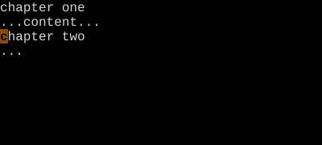
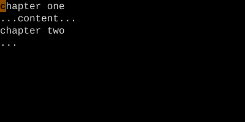

Setting and Jumping to Marks
m{a-z} sets a mark. '{a-z} jumps to its line. `{a-z} jumps to its exact spot.
Marks are named bookmarks. Lowercase marks are buffer-local; uppercase marks are global across files.
Marks are persistent bookmarks. ma sets mark a at the cursor. 'a or `a jumps back to it. The whole alphabet is at your disposal — 26 lowercase marks per buffer plus 26 uppercase that work across files.
| Key | Note |
|---|---|
| m | |
| a |
| Key | Note |
|---|---|
| ' | |
| a |
| Key | Note |
|---|---|
| ` | |
| a |
| Key | Note |
|---|---|
| m | |
| A |
Reference
| Key | Action |
|---|---|
| m{a} | Set lowercase mark (local) |
| m{A} | Set uppercase mark (global) |
| '{a} | Jump to line of mark |
| `{a} | Jump to exact position of mark |
| `:marks` | List all marks |
| `:delm` {a} | Delete a mark |
Worked example — ma and 'a
Set a mark, jump back later.

a set at this line.

a.
Lowercase marks are file-local; uppercase marks are global (jump across files).
See also: Special Marks, Tick vs Backtick, The Jump List